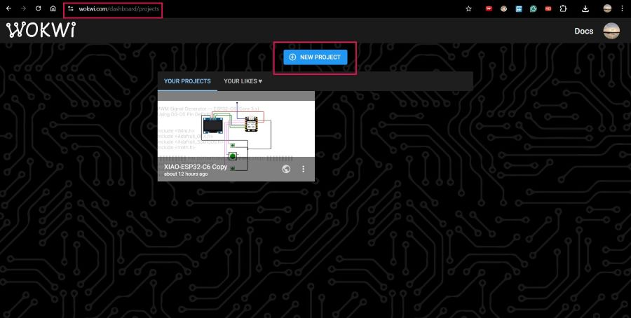
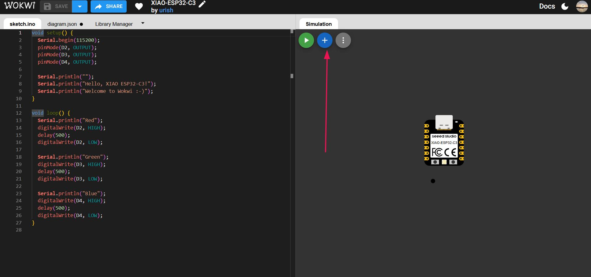
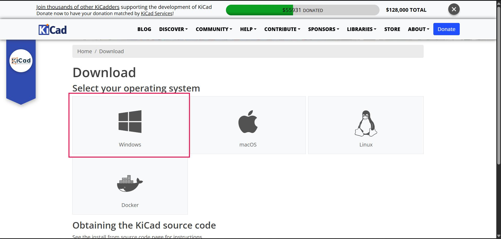
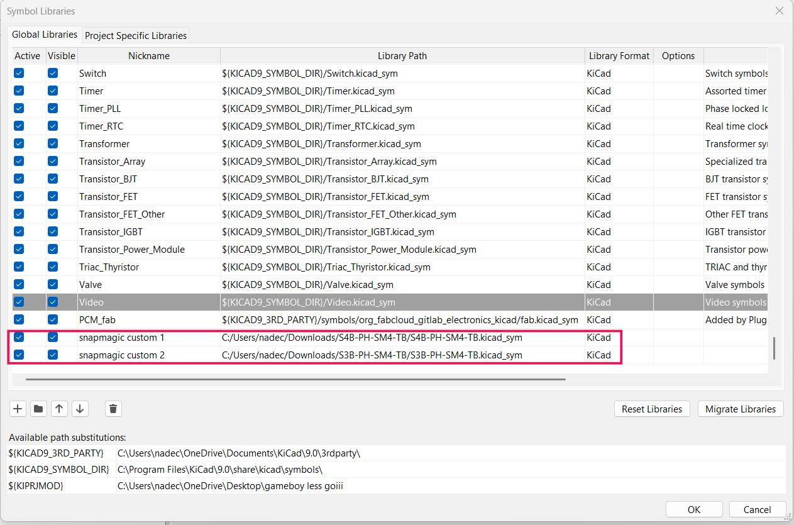
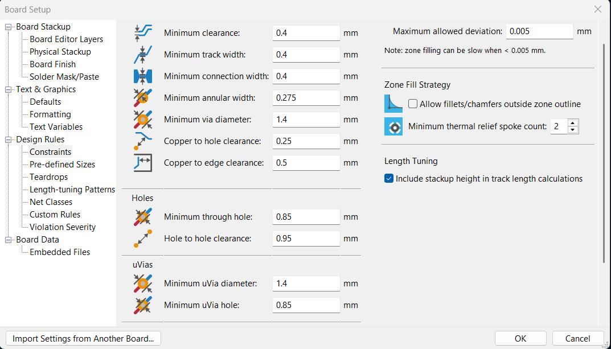
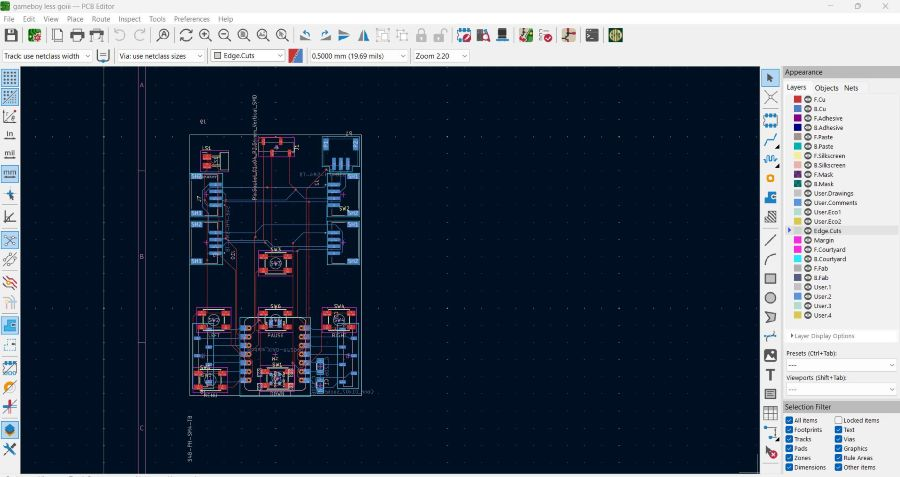
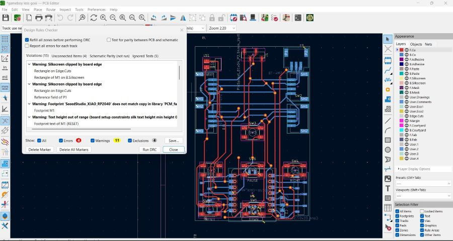

Week 06 – Electronics Design#
Week 6 is all about Electronics Design — which basically means this is the week where we stop connecting stuff on breadboards and start actually designing the circuits ourselves. The goal was to understand how to simulate circuits, draw proper schematics, and route a real PCB.
I tied this week directly into the NB6-Boy project I built during the Embedded Programming week, so this was super relevant for me.
Group Assignment#
- Use the test equipment in your lab to observe the operation of a microcontroller circuit board
Individual Assignment#
- Use an EDA tool to design a development board that can interact with and send data to an embedded microcontroller
- Extra Credit: Try different tools
What I Learned#
This week helped me understand the full electronics design pipeline — from how a circuit is simulated before it’s built, all the way through to how you route a PCB and visualise it in 3D.
Key things I picked up:
- How Wokwi works as a circuit simulator and why the VS Code plugin is better for complex projects
- How to create a full schematic in KiCad with proper symbols and net connections
- How to import custom component footprints from SnapMagic when the standard library doesn’t have what I need
- How ERC/DRC checks can save you from expensive mistakes
- How to go from a KiCad PCB all the way into Fusion 360 for casing design using a STEP file export
Software Used#
- Wokwi (browser + VS Code plugin) — circuit simulation
- KiCad — schematic and PCB design
- SnapMagic — importing custom component footprints
- Fusion 360 — 3D casing design using exported STEP file
Weekly Schedule#
| Day | What I Did |
|---|---|
| WED | Lecture on electronics design with Neil |
| THU | Wokwi browser simulation — building the NB6-Boy circuit |
| FRI | Switching to Wokwi VS Code plugin, getting simulation working |
| SAT | KiCad install, Fab library setup, starting the schematic |
| SUN | Completing schematic, ERC check, assigning footprints |
| MON | PCB layout, routing, DRC, 3D view and STEP export |
| TUE | Regional review |
Part 1 – Circuit Simulation with Wokwi#
🖥️ What is Wokwi?#
Wokwi is a free, browser-based electronics simulator that lets you test circuits and code before you ever touch actual hardware.
It supports a ton of microcontrollers (ESP32, RP2040, Arduino, etc.) and common components — and it’s completely free to use. Think of it like a virtual breadboard + compiler combo.
This is actually really useful because you can catch wiring mistakes and code bugs without burning components or wasting time debugging hardware.
🆕 Creating an Account and New Project#
Steps:
- Go to wokwi.com
- Click Sign Up and create a free account (you can use email or GitHub)
- Once logged in, click New Project
- From the template picker, select ESP32 as the starting board

Why ESP32? — My NB6-Boy from Week 4 was built on the Seeed Studio XIAO ESP32-C6, so simulating it on the ESP32 let me use the exact same code and wiring.
➕ Adding Components in the diagram.json#
Wokwi stores your circuit inside a file called diagram.json. You can either edit it as JSON directly or use the visual drag-and-drop interface — I used the visual interface since it’s way easier.
Components I added for the NB6-Boy:
| Component | Quantity | Purpose |
|---|---|---|
| ESP32 | 1 | Main microcontroller |
| Push Buttons | 6 | Game controls (Up, Down, Left, Right, A, B) |
| Passive Buzzer | 1 | Sound effects and audio feedback |
| OLED Display (SSD1306) | 1 | Game display |
| NeoPixel LED Matrix | 1 | Visual effects and score display |
How to add components:
- Click the "+" button (Add Component) in the top toolbar
- Search by name — e.g. type
pushbutton,buzzer, orSSD1306 - Click to place it on the canvas
- Drag it to wherever makes sense in your layout
- Click on a pin to start drawing a wire, then click the destination pin to finish the connection
- Repeat for all your components until everything is wired up

💻 Pasting the Code and Simulating#
Once the wiring was done:
- Click the code editor tab on the left panel — this is the
.inofile section - Paste in the full NB6-Boy code from Week 4
- Hit the ▶ Simulate button
Problem: The online compiler timed out with a long string of 000... errors and couldn’t finish compiling. This was almost definitely because of the complexity of the libraries (NeoPixel, SSD1306, etc.) that the browser-based compiler just couldn’t handle.

At this point I had to shift to a different approach.
🔌 Switching to the Wokwi VS Code Plugin#
The Wokwi VS Code extension solves the compilation issue entirely — it uses your local compiler instead of the browser’s online one, so complex multi-library projects just work.
Installing the Extension#
- Open VS Code and go to the Extensions panel (
Ctrl+Shift+X) - Search for Wokwi and install the official Wokwi Simulator extension

- Once installed, you’ll be prompted to activate it — click the link and follow the steps on the official Wokwi VS Code docs to get your free licence key
- Paste the key into VS Code when prompted and you’re good to go
Setting Up the Project#
- Open your project folder in VS Code (the one containing your
.inoor PlatformIO source) - Create a
wokwi.tomlfile in the root of your project:
[wokwi]
version = 1
elf = ".pio/build/esp32dev/firmware.elf"
firmware = ".pio/build/esp32dev/firmware.bin"- Copy the
diagram.jsonfile you built on the Wokwi website into the same project folder - Make sure your source code is in the
src/folder (if using PlatformIO) or directly in the project root (if using Arduino CLI)
Running the Simulation#
- Press
F1and type Wokwi: Start Simulator — or click the Wokwi icon in the sidebar - VS Code compiles the code locally first
- Once done, the simulation window opens

Result: The NB6-Boy simulation worked perfectly! 🎮
The OLED display booted up, all six buttons were responsive, the NeoPixel matrix lit up, and the buzzer fired sounds exactly like it does on the physical hardware.
Tip: The VS Code plugin is 100% the way to go for complex projects. The browser version is great for quick tests, but once you have multiple libraries it just can’t keep up.
Part 2 – Schematic Design with KiCad#
📥 Installing KiCad#
KiCad is the open-source EDA (Electronic Design Automation) tool used across Fab Academy for schematic capture and PCB design.
- Go to the official KiCad download page
- Select Windows and download the installer
- Run it and go through the KiCad Installation Manager
- Keep the default library selections — you can always add more later


📚 Importing the Fab Academy KiCad Library#
The standard KiCad library is great, but Fab Academy has its own library of components with footprints specifically sized and optimised for the Roland SRM-20 milling machine we use in the lab.
- Download the Fab Academy KiCad library from:
https://gitlab.fabcloud.org/pub/libraries/electronics/kicad - Open KiCad and go to Preferences → Manage Symbol Libraries
- Click Add Existing and navigate to the downloaded
.kicad_symfile - Click OK

- Now go to Preferences → Manage Footprint Libraries
- Add the downloaded
.prettyfolder the same way - Click OK
The Fab library is now available — you’ll see it listed as fab in all library searches from here on.
🆕 Creating a New Project#
- In the KiCad project manager, click New Project
- Give it a name — I called mine
NB6-Boy-PCB - Choose a project folder and click Save
- This creates a
.kicad_schschematic file and a.kicad_pcbPCB file
📐 Building the Schematic#
Double-click the Schematic Editor (.kicad_sch) to open it.
The schematic is the logical map of your circuit — it shows what connects to what, using standardised symbols. It doesn’t care about physical size or position yet, that comes later in the PCB editor.
Adding Components#
Press A to open the Add Symbol dialog, search for your component, and click to place it.
Components I added for the NB6-Boy PCB:
| Component | Symbol Source | Notes |
|---|---|---|
| RP2040 | Fab Library | Main MCU |
| Push Buttons ×6 | Fab Library | Game controls |
| OLED Display (SSD1306) | Fab Library | I²C — SDA/SCL |
| NeoPixel Matrix | Fab Library | Single data pin control |
| Passive Buzzer | Fab Library | PWM audio output |
| Decoupling Capacitors | KiCad Default | 100nF across VCC/GND |
| JST Connector (SDA/SCL) | Fab Library | Expansion header |
| JST Connector (RX/TX) | Fab Library | Expansion header |

Drawing Wires#
Press W to start the Wire tool.
- Click a pin to start the wire
- Click the destination pin to finish it
- Use Power Symbols (
PWR,GND,VCC) from the Add Symbol dialog to label power nets cleanly — this avoids having to draw wires all the way across the schematic
Why I Added Extra JST Connectors#
I added JST expansion connectors broken out for:
- SDA / SCL — so I can plug in extra I²C peripherals later (sensors, displays, etc.)
- RX / TX — for UART debugging or future wireless module integration
This makes the development board way more useful beyond just the NB6-Boy. If I want to use the same board for a different project down the line, those connectors are already there.

✅ Running the ERC (Electrical Rules Check)#
Before moving to PCB layout, you run the ERC to check for any logical errors in your schematic.
- Go to Inspect → Electrical Rules Checker
- Click Run ERC
- Go through the list of any errors or warnings
Common things to fix:
- Unconnected pins → add a
PWR_FLAGor connect to a net - Missing power pins → make sure all VCC and GND pins are connected
- Pin direction conflicts → double check that outputs aren’t connected to outputs
Keep fixing until it shows 0 errors, 0 warnings.

🔗 Assigning Footprints#
Once the schematic is clean, each symbol needs to be linked to a physical footprint — basically, the actual copper pads and silkscreen outline that will appear on the PCB.
- Go to Tools → Assign Footprints
- For each component, pick the matching footprint from the Fab library or KiCad default library
- Make sure pad count, pitch, and package size match your actual components
- Click Apply and Save
Part 3 – Importing Components Not in the Fab Library Using SnapMagic#
🔍 What is SnapMagic?#
Sometimes the component you need — a specific display driver, a non-standard IC, a particular connector — just isn’t in the Fab library or the KiCad default library.
SnapMagic (also known as SnapEDA) is a website with a massive database of free, ready-to-use KiCad symbols, footprints, and 3D models for real electronic components. You can find almost anything there.
📥 Downloading a Component from SnapMagic#
- Go to snapeda.com
- In the search bar, type the exact part number (e.g.
SSD1306,WS2812B,AMS1117-3.3)

- Select the correct result from the list — double-check the package type and pin count
- Click Download Symbol & Footprint
- Choose KiCad from the format dropdown
- Click Download — this gives you a
.zipfile
Inside the zip you’ll find:
- A
.kicad_symfile — the schematic symbol - A
.kicad_modfile — the PCB footprint - A
.stepfile — a 3D model (super useful for the 3D viewer later!)
📦 Importing into KiCad#
Extract the zip somewhere sensible — I made a custom-components/ folder inside my KiCad project folder.
Importing the Symbol#
- In KiCad, go to Preferences → Manage Symbol Libraries → Add Existing
- Navigate to the
.kicad_symfile and select it - Give it a nickname like
snapmagic_custom - Click OK
The component now shows up when you press A in the schematic editor — just filter by the library name you gave it.

Importing the Footprint#
- Go to Preferences → Manage Footprint Libraries → Add Existing
- Navigate to the folder containing the
.kicad_modfile - Add the folder and give it a nickname
- Click OK
When assigning footprints, filter by your new library name and the component will appear in the list.
Adding the 3D Model#
- Copy the
.stepfile into your project folder (e.g. inside a3d-models/subfolder) - Open the Footprint Editor for that component
- Go to the 3D Models tab
- Click Add and point it to the
.stepfile
Now when you open the 3D PCB viewer, the component shows as a proper 3D model instead of just a blank box — which is honestly really satisfying.
Important tip: Always double-check the footprint dimensions against the component’s actual datasheet. Compare pad pitch and courtyard size carefully before you start routing — a footprint mismatch is one of the most painful mistakes to discover after fabrication.
Part 4 – PCB Layout and Routing#
📂 Opening the PCB Editor#
- From the KiCad project manager, click the PCB Editor (
.kicad_pcb) - Go to Tools → Update PCB from Schematic
- This imports all your components as footprints and shows the ratsnest — the thin lines connecting pins that still need to be routed
⚙️ Setting Design Rules#
Before placing anything, set your design constraints based on what the Roland SRM-20 can actually mill.
Go to File → Board Setup → Design Rules:
| Parameter | Value |
|---|---|
| Minimum Track Width | 0.4 mm |
| Minimum Clearance | 0.4 mm |
| Minimum Via Diameter | 0.8 mm |
| Copper Pour Clearance | 0.5 mm |

📏 Defining the Board Outline#
- Select the Edge.Cuts layer from the layer panel on the right
- Use Place → Rectangle to draw the board outline
- The dimensions were set to fit the available blank PCB stock in the lab — 70 mm × [height] mm
- Make sure it’s a complete closed loop — any gaps will cause issues later
🧩 Placing Components#
All the imported footprints start as a messy cluster outside the board boundary.
- Click and drag each component inside the board outline
- Press
Rto rotate - Think about the layout logically:
- MCU in the centre
- Buttons along the edges (where thumbs would naturally reach on the game console)
- Connectors at one end for easy cable access
- Passive components (capacitors, resistors) close to the relevant power pins
- Try to minimise ratsnest line crossings before routing — the cleaner it looks now, the easier routing will be

🔀 Routing Traces#
- Press
Xto activate the Route Tracks tool - Click a pad to start, then click the destination pad to finish the trace
- All traces go on the F.Cu (front copper) layer since this is a single-sided board
- For any unavoidable crossings, use a 0Ω resistor as a jumper instead of a via — the SRM-20 can’t drill vias
Routing order:
- Route power (VCC, GND) first with wider traces (0.8 mm+) since they carry more current
- Then route signal traces at standard width (0.4 mm)

🔍 Running the DRC (Design Rules Check)#
After routing everything, run the DRC to catch any physical problems:
- Go to Inspect → Design Rules Checker
- Click Run DRC
- Fix any clearance violations, unrouted nets, or silkscreen overlaps
- Keep going until you have 0 errors

Part 5 – 3D Visualisation and Casing Design#
🖼️ Viewing the PCB in 3D#
Before doing anything else, I wanted to see what the board actually looked like physically.
- In the PCB Editor, press
Alt+3or go to View → 3D Viewer - The viewer renders all components with their assigned 3D models — including the ones imported from SnapMagic
- Rotate and zoom to check for physical conflicts, component clearances, and overall layout quality
This is genuinely satisfying to look at after spending hours staring at 2D traces lol.

📤 Exporting the STEP File#
To use the PCB as a reference for the enclosure in Fusion 360, I exported it as a STEP file:
- In the PCB Editor, go to File → Export → STEP
- Set the output path and filename:
NB6-Boy-PCB.step - Click Export
This generates a full 3D model of the populated PCB — components and all.
🏠 Importing into Fusion 360 for Casing Design#
- Open Autodesk Fusion 360
- Go to File → Open → Open from my Computer
- Select the
NB6-Boy-PCB.stepfile
The PCB loads as a solid body with all components in their exact positions.
Building the Casing#
- Create a new component for the casing (keep it separate from the PCB body — good practice)
- Use Offset Plane above the PCB surface to define the height of the enclosure walls
- Create a Sketch on the XY plane and trace the board outline
- Extrude the walls upward to create the bottom shell
- Use the component positions on the PCB as guides to add cutouts:
- Cutouts for each of the 6 buttons to poke through
- A rectangular window for the OLED display
- A small hole for the buzzer
- A slot for the USB connector
- Create the lid as a separate body using the same board outline
- Apply Fillets to all sharp edges for better ergonomics and easier 3D printing
- Export as
.stlfor 3D printing (that’s covered in Week 05!)

This KiCad → STEP → Fusion 360 workflow is honestly one of the coolest things I’ve learned this week. Going seamlessly from a PCB layout to a mechanically accurate enclosure design, where everything fits without guesswork, is super powerful.
Files#
| File | Description |
|---|---|
diagram.json |
Wokwi circuit diagram for NB6-Boy simulation |
NB6-Boy-PCB.kicad_sch |
KiCad schematic file |
NB6-Boy-PCB.kicad_pcb |
KiCad PCB layout file |
NB6-Boy-PCB.step |
3D model exported from KiCad for casing design |
⬇️ Download All Files from Week 6
Helpful Websites#
- Wokwi Simulator — https://wokwi.com/
- Wokwi VS Code Docs — https://docs.wokwi.com/vscode/getting-started
- KiCad Official Site — https://www.kicad.org/
- Fab Academy KiCad Library — https://gitlab.fabcloud.org/pub/libraries/electronics/kicad
- SnapMagic (SnapEDA) — https://www.snapeda.com/
Reflection#
Going into this week I honestly wasn’t sure how much depth there was here — I figured it was just “draw some circles and lines on a PCB.” But it’s way more than that.
Understanding why you set clearances a certain way, why you route power before signal traces, why the ERC catches errors that your eyes would totally miss — all of that context made the process feel intentional rather than just randomly clicking around in software.
Also, designing a board that I actually want — one directly tied to the NB6-Boy project — made it way easier to stay motivated through the whole process.
Next up: actually fabricating this board during Electronics Production week. Cannot wait to see this thing as a physical PCB 😎